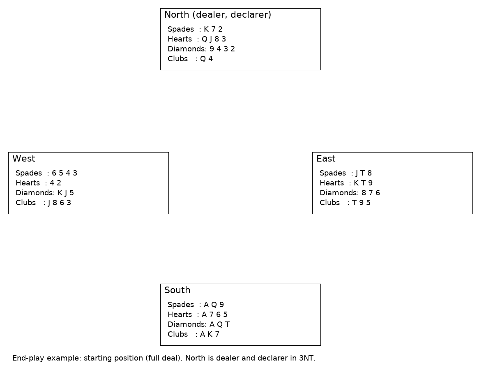

How to Turn a Diamond Finesse Into an End Play (and Why That's Sexy)
Author's note: an end play isn't dark magic — it's the elegant nudging of an opponent so they have to lead into your strengths or give you an extra trick. It's something I've understood the theory of for some time; however, that does not guarantee (or even suggest) that I will see them at the table. So to help me and hopefully you. Here's a compact example you can read in five minutes and hopefully, if I have done my job, then this will cement itself into my aging brain and you will be interested enough to click on the link to explore different types of end-game and maybe play through a few/download them to play on your favorite app or practice site. For once you can do this without your partner needing to know what you have added to your game to make it useful. MDLJ.
The Deal (Starting Position)
Full deal (North dealer): North is declarer in 3NT.

Hands (S H D C)
North: K72 . QJ83 . 9432 . Q4
East: JT8 . KT9 . 876 . T95
South: AQ9 . A765 . AQT . AK7
West: 6543 . 42 . KJ5 . J863
Quick Counting — How Many Quick Tricks Do We Have?
Before you shove the defenders around, count your immediate winners:
South (combined viewpoint): Spades — A, K, Q (3 quick tricks); Hearts — A (maybe more in combination); Clubs — A, K (2 quick tricks); Diamonds — A (1 quick trick). That’s 6 clear tricks and a few more depending on cross-ruffing or finesses to be planned. lets see what else is possible
The Plan
The aim in this compact example is to clear the side suits so the defenders are left only with diamonds — yielding the “end play”.
When only diamonds remain, the defender who is thrown in will be forced to give a trick (or lead through declarer's tenace).
Play (Illustrative Line)
Note: This is one illustrative line to reach the three-card ending described. Many equivalent permutations exist.
Assume normal opening lead (for example, West leads a small spade). Declarer wins in South with the Ace of spades.
Take the top spade honors (K then Q)
Play hearts from the dummy (North) towards South’s Ace to eliminate heart losers — cash QJ from North and then South's Ace. This clears hearts.
Cash clubs: cash South's A and K of clubs. If opponents follow, continue discarding any remaining side losers.
During this process declarer manages entries so that at the moment only diamonds remain in each hand, the position is exactly:
If you finesse early and it loses, the defender returns a suit that may give away a trick.
With everything else cleared, the end play forces a defender to lead diamonds (or to give up the lead at a moment that benefits declarer). If West is the player who holds KJ5 and is eventually thrown in, any lead from West hands you the trick(s) — either by leading into South’s AQ10 combination or by giving a ruff-and-sluff equivalent in other contexts.
The end play converts “if-my-finesse-works” situations into “if-my-finesse-fails-I-still-get-an-extra-trick” situations.
A Concrete Example at the Three-Card Ending
By the time only diamonds remain, declarer has already eliminated all the side suits — leaving the defenders no safe exit.
When a small diamond is led from North to South’s ten, West is forced to win with either the Jack or the King.
Whatever West returns, declarer’s remaining diamonds (A Q) are now high. If West refuses to win, declarer can later cash all three diamonds anyway.
This position shows the classic end-play: the defenders are forced on lead in the danger suit and must concede extra tricks.
North (dealer / declarer)
4♦3♦2♦
East
8♦7♦6♦
West
K♦J♦5♦
South
A♦Q♦T♦
End-play position (only diamonds remain). Play: North leads 2♦ → South's T♦; if West wins with J♦/K♦ and is forced to return a diamond, declarer gains two tricks.
Wrap-Up and Next Steps
This short example shows the idea in a compact fashion: remove distractions, count winners, and deliberately “throw” a defender into a position where any lead they make gives you something useful.
It takes practice to see when to strip suits and when to finesse, but once you can visualize the 3-card ending you’ll start to smell the end plays in the wild.
In the next blog we can add more examples (strip-and-endplay, throw-in, entry-shaving lines). For now, you can download the PBN file with the full deal and use it in any PBN-compatible viewer or play it now on the page by selecting 3NT by Nrth below